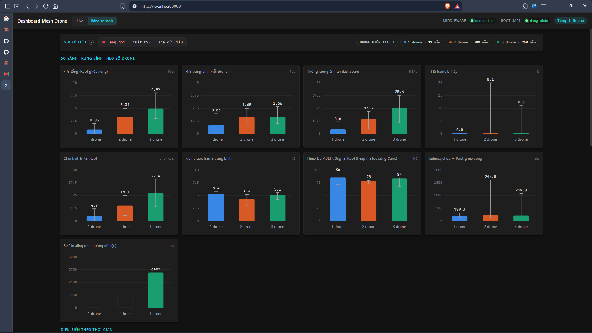

Đồ án chuyên ngành · Kỹ thuật Điện tử – Viễn thông
Thiết kế mạng WiFi Mesh kết nối Drone và Robot
Design of a WiFi Mesh Network for Connecting Drones and Robots
Nội dung
Năm phần trình bày
- 1. Đặt vấn đề và mục tiêu
- 2. Cơ sở lý thuyết trọng tâm
- 3. Thiết kế hệ thống (3 lớp)
- 4. Kết quả thực nghiệm
- 5. Kết luận, hạn chế, hướng phát triển
01 · Đặt vấn đề
Vùng không có hạ tầng mạng cần một mạng tự tổ chức
Mô hình hình sao (Star)
- Mọi thiết bị nối trực tiếp router/AP
- Ra khỏi vùng phủ hoặc router hỏng → mất liên lạc
- 4G cần SIM và hạ tầng nhà mạng
Mô hình mesh đa chặng
- Mỗi node vừa gửi vừa chuyển tiếp
- Node xa gửi qua node trung gian
- Không cần SIM, Internet, router
Bối cảnh: thiên tai, hầm mỏ, rừng núi. Hai thách thức: (1) định tuyến đa chặng khi topology đổi; (2) truyền ảnh lớn khi mỗi bản tin painlessMesh chỉ mang ~1400 byte.
chuong1.tex, mục 1.101 · Mục tiêu và phạm vi
Thiết kế, thi công, đánh giá mạng mesh truyền ảnh thời gian thực
| Tiêu chí | Định nghĩa |
|---|---|
| Thông lượng | Dữ liệu ảnh nhận thành công / thời gian, và suy giảm theo số chặng |
| Độ trễ | Từ lúc Leaf chụp đến lúc Root ghép xong ảnh |
| Tự phục hồi | Thời gian khôi phục đường truyền khi node trung gian mất nguồn / ra vùng phủ |
Phạm vi
- 1 Root + 3 Leaf, đặt trên mặt đất hoặc cầm tay
- Không chế tạo drone, không dùng xe RC; anten PCB tích hợp
- Vai trò chuyển tiếp do mạng tự hình thành theo vị trí và RSSI
- Mô hình truyền thông đa chặng theo hướng FANET — chưa thử trên drone đang bay
02 · Cơ sở lý thuyết trọng tâm
Bốn nền tảng của hệ thống
Mạng mesh và FANET
FANET đúng nghĩa khi nhiều UAV liên lạc ad-hoc với nhau (Bekmezci, 2013). Đề tài gần nhất với kịch bản "mở rộng vùng hoạt động".
Giao thức định tuyến
AODV, OLSR/DSDV, B.A.T.M.A.N đều cho Linux/tầng IP, không có bản cho ESP32 → dùng cơ chế sẵn của painlessMesh.
painlessMesh
Mạng cây tự tổ chức, bản tin JSON qua TCP, chuyển tiếp từng cạnh, ~1400 byte/bản tin. Là cây động, không phải full mesh.
FreeRTOS
painlessMesh chạy trong loopTask; nếu loop() bị chặn thì mesh.update() bị gọi thưa. Giải thích hiện tượng mạng ngừng truyền ở phần kết quả.
02 · Chỉ số đánh giá
Năm chỉ số, đo ngay trên mạng thật
| Chỉ số | Công thức |
|---|---|
| Thông lượng | T = B / Δt (KB/s) |
| Số khung/giây | FPS = N_ok / Δt |
| Tỉ lệ hủy khung | R_h = N_h / (N_ok + N_h) × 100 % |
| Độ trễ | d = t_ghép − t_chụp (đồng hồ chung của mesh) |
| Tự phục hồi | T_ph = t_nối − t_mất (theo luồng dữ liệu) |
Độ trễ dùng đồng hồ do painlessMesh đồng bộ, không cần NTP. Tự phục hồi đo theo gói phân mảnh cuối cùng nhận được và gói đầu tiên nhận lại, không theo sự kiện topology của thư viện.
chuong2.tex, mục 2.603 · Thiết kế hệ thống
Kiến trúc 3 lớp: Mesh – UART – PC
sendSingleÝ chính: Root chỉ gửi lên PC ảnh đã ghép → middleware và dashboard không xử lý mất gói trên mesh. Tách truyền vô tuyến khỏi hiển thị.
chuong3.tex, mục 3.103 · Phần cứng
Một Root, ba Leaf chạy bằng pin
| Vai trò | Node ID | Phần cứng |
|---|---|---|
| Root | 2846999225 | ESP32-WROOM-32D DevKitC, không PSRAM, CP2102, UART 921600 |
| Leaf | 1207369673 | ESP32-CAM-MB OV3660, pin 18650 + module tăng áp |
| Leaf | 1207433521 | |
| Leaf | 1207449329 |
Khối nguồn Leaf: pin 18650 2000 mAh → đế pin → tăng áp 0,9–5 V ra 5 V USB → Micro-USB → board. Tụ 470 µF song song tại chân IN.
Tăng áp, không dùng LM2596
1 cell 18650 ≈ 3,7 V < 5 V nên mạch hạ áp không hoạt động.
Tụ 470 µF
ESP32 phát WiFi có dòng đỉnh lớn; sụt áp gây reset giả, dễ nhầm là lỗi phần mềm.
03 · Phân mảnh ảnh
Header gói phân mảnh 16 byte
offset 0 · 4 · 6 · 8 · 10 · 12
- Payload tối đa 1024 B; (16 + 1024) B mã hóa Base64 → tối đa 1388 ký tự, vừa giới hạn ~1400 B của painlessMesh.
- Vì sao không nhỏ hơn 1024: giảm kích thước gói không giảm đụng độ trên kênh dùng chung, chỉ tăng số bản tin và overhead.
capture_usthêm ngày 30/09 để đo độ trễ (trước đó header 12 B).- Phân mảnh tự viết ở tầng ứng dụng, khác IP fragmentation ở tầng Network.
03 · Firmware
Leaf chụp và gửi lệch pha, Root ghép bằng 4 slot
Leaf node_camera.ino
- QVGA 320×240, JPEG quality 12, chu kỳ 600 ms
- Học ID Root qua beacon
#ROOT(2 s), gửisendSinglethẳng tới Root - Gửi lệch pha: 3 khe × 200 ms, mỗi Leaf một khe
- Watchdog: mất beacon > 8 s học lại Root; > 30 s khởi động lại
#NSTATmỗi 2 s: RSSI, heap, firmware, lý do reset#không thuộc bảng Base64 → không nhầm với gói ảnh
Root node_root.ino
- 4 slot ghép, mỗi slot có bitmap + timeout 2 s
- Supersede: khung mới của cùng node → hủy khung cũ chưa xong
- Hết slot → loại khung cũ nhất (LRU)
- Telemetry mỗi 2 s: khung OK/hủy, heap, topology, số chặng, RSSI, độ trễ, tự phục hồi
- Node im lặng > 10 s bị đánh dấu; heap < 40 KB liên tục > 10 s → tự reset
03 · UART, Middleware, Dashboard
Khung nhị phân có CRC, dashboard dùng dữ liệu thật
Khung UART
AA 55 | TYPE (01 ảnh, 02 telemetry, 03 log) | LEN 4 B LE | PAYLOAD | CRC16/CCITT-FALSE. Bỏ khung ảnh nếu bộ đệm còn < ½; telemetry và log không bao giờ bị bỏ.
Middleware Node.js
Tìm MAGIC → kiểm LEN (≤ 131072) → kiểm CRC → Socket.IO. Lỗi chỉ bỏ phần hỏng. Bộ test test_protocol.js đạt 7/7 kịch bản.
Dashboard (React 18 + Tailwind)
Tab Live: ảnh từng Leaf, cây topology theo RSSI. Tab So sánh: FPS, thông lượng, tỉ lệ hủy, heap, tự phục hồi; xuất CSV.
 Tab Live
Tab Live
Tab So sánh04 · Kết quả — bring-up
Sáu sự cố và cách xử lý
| Sự cố | Nguyên nhân | Xử lý |
|---|---|---|
| Root treo khi khởi động | Firmware bắt buộc PSRAM, board không có | Cấp phát trong SRAM nội |
| Middleware bỏ nhiều byte | Log văn bản chèn vào UART nhị phân | Hạ mức log |
| Leaf gửi thất bại 100 % | Lỗi ngừng quét của painlessMesh gốc | Chuyển sang fork Alteriom |
| Leaf mất kết nối liên tục | Root nối WiFi nhà, tranh chấp radio | Tắt station của Root |
| Heap Leaf giảm 154 → 72 KB | Cáp/cổng USB không đủ dòng đỉnh | Đổi cáp, sau đó dùng pin |
| Hai Leaf đổi cha liên tục | Hai radio cách vài cm tranh chấp kênh | Tách các Leaf ra xa |
1 Leaf, giai đoạn bring-up
6 khung hủy (bring-up)
khung UART
04 · Kết quả 1
Hai nút thắt được xác định bằng đo đạc
Nút thắt 1 — số slot ghép tại Root (17/09)
2 Leaf, Root chỉ 1 slot → 111 OK / 496 hủy → hủy ~82 % (1 Leaf: 0,5 %). Leaf B chiếm slot đang ghép dở của Leaf A. Sửa: 4 slot + sendSingle.
Nút thắt 2 — tải ghi UART tại Root (28–29/09)
Chu kỳ 300 ms: FPS tổng 3,5 → 7 → 10 với 1/2/3 Leaf. Nhưng 3 Leaf: toàn mạng ngừng sau 6–26 s, heap Root 90 → 57 KB. ~47 KB/s ảnh so với giới hạn ~92 KB/s → ghi UART chặn → mesh.update() gọi thưa. Giảm tải ~40 % (600 ms): hết ngừng, FPS ~10 → ~5.
FPS tổng theo số Leaf
04 · Kết quả 2
Chu kỳ 600 ms và bộ đệm UART 16 KB
Chu kỳ 600 ms
| Leaf | FPS tổng | Ghi chú |
|---|---|---|
| 1 | 1,67 ± 0,40 | 7,8 KB/s; hủy 0 %; heap 111–113 KB |
| 2 | ≈ 3,3 | Ổn định ~4 phút |
| 3 | 4,85 ± 0,96 | ~1,6 FPS/Leaf; 31 chunk/s; ~2 phút |
Bộ đệm UART TX (06/10, 3 Leaf, 1 chặng)
| Chỉ tiêu | test19 | test21 |
|---|---|---|
| Firmware Root | 10-01c | 10-06a |
| Bộ đệm UART TX | 8 KB | 16 KB |
| Thời lượng | 15 ph | 20 ph |
| FPS tổng TB | 5,0 | 5,0 |
| Thông lượng TB | 22,0 KB/s | 25,6 KB/s |
| Độ trễ TB | 280 ms | 199 ms |
| uartDrop | 137 → 480 | 0 |
Thận trọng: mỗi cấu hình đo 1 lần, thời lượng khác nhau, hai firmware còn khác ở chỗ khác — chỉ nói "trong hai phép đo này", không khẳng định chung.
chuong4.tex, Bảng 4.2, 4.404 · Kết quả 3 · test22 (09/10) bổ sung sau khi nộp báo cáo
Mỗi chặng cộng thêm ~200 ms độ trễ
Độ trễ trung vị theo số chặng (ms)
Root → …449329 → …433521 → …369673 (ID rút gọn), giữ ~16 phút (490 mẫu). Root FW 10-06a, Leaf FW 10-01b, bật stagger.
FPS tổng
thông lượng
hủy; uartDrop 0
- FPS gần như không đổi so với test21: tải bị giới hạn bởi chu kỳ chụp, chưa ép tới bão hòa → chưa đo suy giảm thông lượng theo hop
- ~6,5 % mẫu trễ > 1 s, cao nhất 4,3 s
- Tự phục hồi: 5 sự kiện, 1530–23225 ms; node mới gia nhập làm toàn mạng gián đoạn ~16 s. Chưa ghi thao tác thực tế → chưa phân loại kịch bản
05 · Kết luận, hạn chế, hướng phát triển
Đạt được
- Chuỗi hoàn chỉnh trên phần cứng thật: chụp → phân mảnh → mesh → ghép → UART CRC → middleware → dashboard
- Xác định bằng đo đạc 2 nút thắt: số slot ghép, tải ghi UART
- Watchdog, bảo vệ heap, theo dõi node im lặng, ghi UART không chặn, gửi lệch pha, đo độ trễ và tự phục hồi
Hạn chế (nói trước)
- Chưa gửi lại: mất 1 chunk là mất cả khung
- Tự phục hồi phân tán (885–32528 ms; test22: 1530–23225 ms, cách đo mới), chưa đủ mẫu từng kịch bản
- Chưa đo thông lượng bão hòa theo chặng, chưa đo dòng tiêu thụ / thời gian chạy pin
- Node đặt tĩnh; painlessMesh (JSON/TCP/Base64 +33 %) không thiết kế cho nhiều luồng ảnh
Hướng phát triển
- Ngắn hạn: ghi UART sang task FreeRTOS riêng; đo tự phục hồi 5–10 lần; đo bão hòa 1/2/3 chặng và dòng Leaf; NACK gộp
- Dài hạn: ESP-WIFI-MESH (đã dựng một phần); định tuyến theo vị trí (GPS/UWB); ESP-NOW
Cảm ơn Hội đồng đã lắng nghe — em xin sẵn sàng trả lời câu hỏi.
chuong5.texDự phòng A
Vì sao chọn painlessMesh, không chọn ESP-WIFI-MESH?
- Danh sách nhiệm vụ đề tài đã chỉ định painlessMesh; chốt ngày 29/09/2026.
- Chạy trên Arduino, nhanh dựng mẫu; gói board esp32 hạ từ 3.3.11 về 2.0.17 theo khuyến nghị thư viện; dùng fork Alteriom/painlessMesh 2.0.3.
- Bản ESP-IDF được giữ trong
data/esp_idf_migration/, đưa vào hướng phát triển.
Dự phòng B
Vì sao UART 921600 bps?
- 115200 bps ≈ 11,5 KB/s (tính toán) — chưa đủ cho 2 Leaf (≈ 15,6 KB/s ở chu kỳ 600 ms) → UART thành nút thắt, làm sai số đo mesh.
- 921600 bps ≈ 92 KB/s lý thuyết; thực tế đã chạm giới hạn ở 3 Leaf × 300 ms (~47 KB/s ảnh + ghi chặn) → bằng chứng cho thấy cần chọn tốc độ cao.
Dự phòng C
Vì sao WebSocket (Socket.IO), không MQTT?
- Kiến trúc 1 Root – 1 middleware – 1 dashboard, không cần broker trung gian.
- Ít thành phần, độ trễ thấp hơn, triển khai nhanh.
- MQTT hợp lý khi mở rộng nhiều Root / nhiều dashboard.
Dự phòng D
Cơ chế ghép ảnh khi mất chunk
- Bitmap đánh dấu chunk đã nhận; quá 2 s chưa đủ → hủy khung.
- Khung mới cùng node tới → hủy khung cũ (supersede, vì Leaf gửi tuần tự).
- Hết slot → LRU.
- Hướng cải tiến: NACK gộp, một bản tin/khung, tránh bão ACK.